Gemini One FigureDRAFT
In the look test, Gemini 3.1 Flash Image (a closed model by Google) sometimes drew a row of copies of the character, like a character sheet. This tries fix F1: the sentence “Show one figure only.” right after “<Name> is the person in reference image 1, the main figure.”, with closing line B. Fix F2 (cropping the reference to one figure) wasn’t run: both base fronts already show one figure.
Copies are counted by eye; a side panel with a large crop of the same figure counts as a copy. Each picture was made once, so these are small samples. Style Mood, as the remix screen starts on it. Spent $1.08 of a $3.50 cap.
The project’s own test pictures: not published. Drafted by the coding agent (Claude, a closed model by Anthropic). DRAFT until the owner approves it.
Where the copies appeared: changes 2, 3, 4 and 8
Pictures with more than one copy: before, line A 5 of 8; before, line B 2 of 8; F1 3 of 8.
2. “dressed all in bright red and gold” · Zei
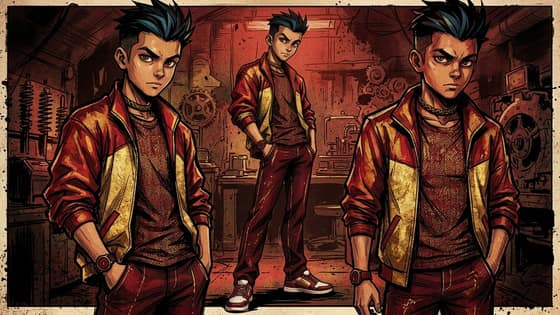
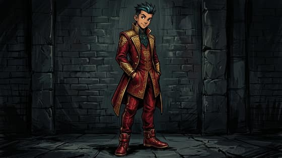
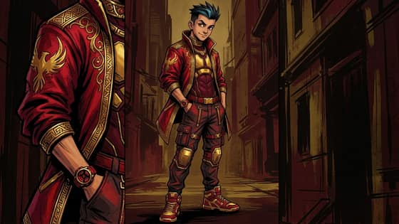
2. “dressed all in bright red and gold” · Bai

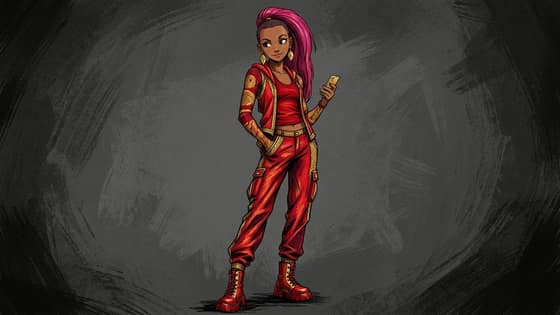
3. “aged about 70” · Zei

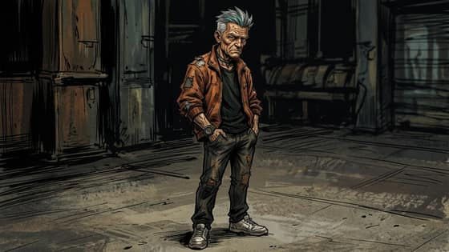
3. “aged about 70” · Bai

4. “much taller, with a heavy, broad-shouldered build” · Zei
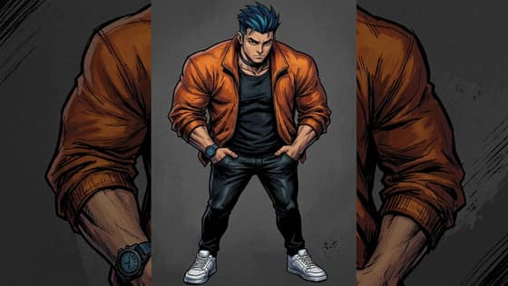

4. “much taller, with a heavy, broad-shouldered build” · Bai

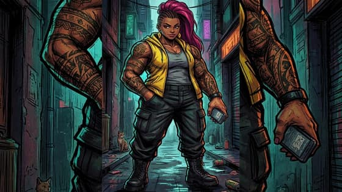
8. “as a medieval knight in armour” · Zei


8. “as a medieval knight in armour” · Bai


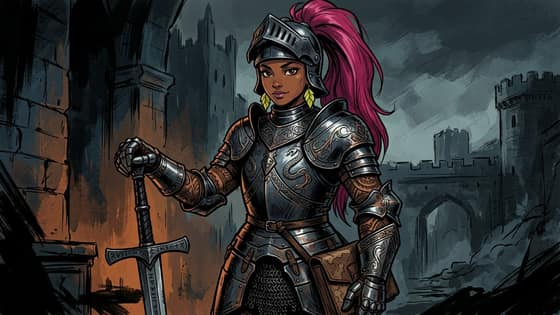
Does it hurt elsewhere? Changes 1, 7, 11 and 12
Pictures with more than one copy: before, line A 0 of 8; before, line B 1 of 8; F1 3 of 8.
1. “in a long winter coat and scarf, snow on the shoulders” · Zei

1. “in a long winter coat and scarf, snow on the shoulders” · Bai


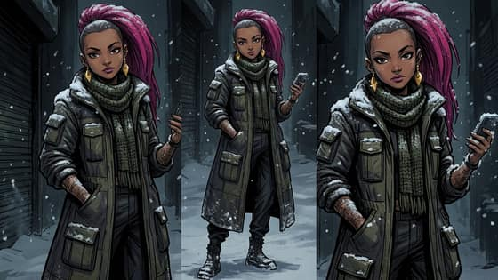
7. “shaved head” · Zei


7. “shaved head” · Bai

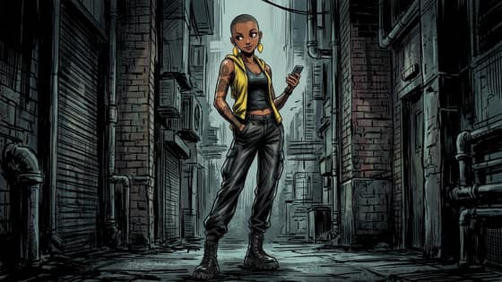
11. “as a deep-sea diver in a brass helmet, underwater” · Zei
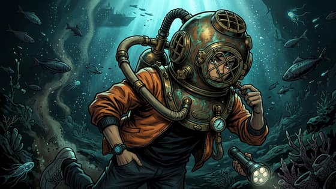

11. “as a deep-sea diver in a brass helmet, underwater” · Bai

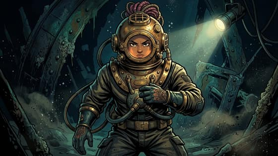
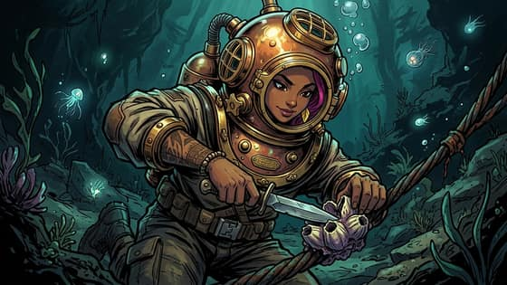
12. “as a fox” · Zei
12. “as a fox” · Bai